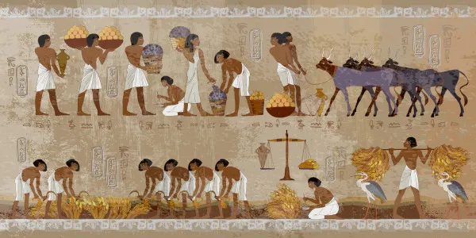
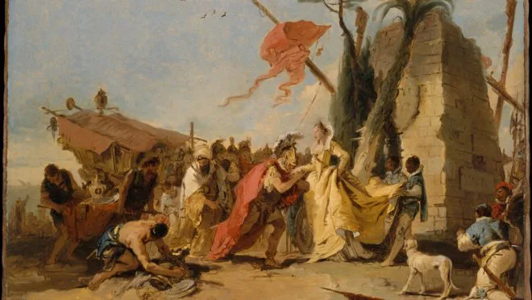
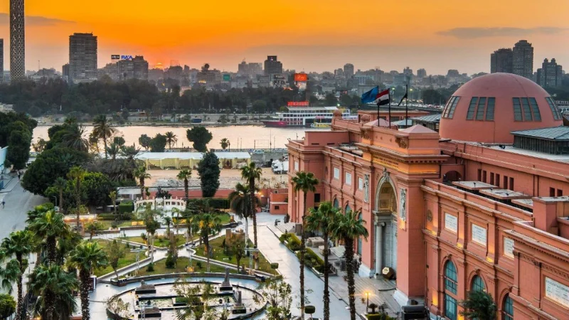

A História do Egito
A história do Egito é uma das mais antigas e impressionantes da humanidade, com registros que remontam a cerca de 3.100 a.C., quando o Alto e o Baixo Egito foram unificados sob o comando do primeiro faraó. A civilização egípcia se desenvolveu às margens do rio Nilo, que era essencial para a agricultura, transporte e sobrevivência da população. Graças às cheias regulares do rio, o solo se tornava fértil, permitindo o crescimento de uma sociedade organizada e próspera.

Durante o período do Egito Antigo, os faraós governavam como líderes políticos e religiosos, sendo considerados representantes dos deuses na Terra. Foi nessa época que surgiram grandes realizações, como a construção das pirâmides de Gizé, templos monumentais e o desenvolvimento da escrita hieroglífica. A religião tinha um papel central na vida dos egípcios, que acreditavam na vida após a morte e realizavam práticas como a mumificação para preservar o corpo.

Ao longo dos séculos, o Egito passou por diferentes fases, incluindo períodos de invasões e dominação por outros povos, como os assírios, persas, gregos e romanos. Um dos momentos mais marcantes foi o domínio de Alexandre, o Grande, que deu início à dinastia ptolomaica, culminando no governo de Cleópatra, a última faraó do Egito.
Posteriormente, o Egito tornou-se parte do Império Romano e, mais tarde, foi conquistado pelos árabes no século VII, o que trouxe a influência da cultura islâmica que permanece até os dias atuais. Já na era moderna, o país passou por processos de colonização europeia, especialmente pelos britânicos, até conquistar sua independência em 1922.

Hoje, o Egito é uma república que preserva sua rica herança histórica enquanto se desenvolve como uma nação moderna. Seus monumentos, tradições e contribuições para a humanidade fazem do país um dos mais importantes berços da civilização.
